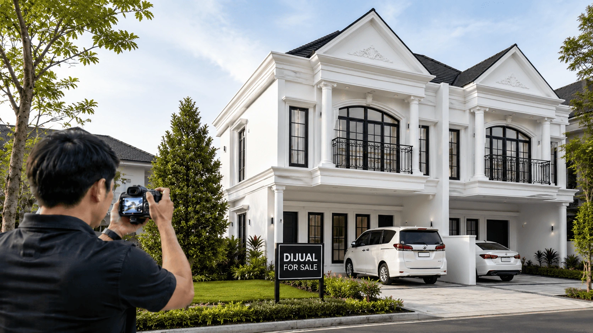

Dalam dunia properti, “mata turun ke hati” adalah hukum utama. Sebelum calon pembeli memutuskan untuk datang survei, mereka akan terlebih dahulu menyaring pilihan melalui layar smartphone atau laptop. Di sinilah kualitas visual memegang peranan vital.
Banyak penjual mengeluhkan rumahnya tak kunjung laku padahal lokasinya strategis. Sering kali, masalahnya bukan pada unitnya, melainkan foto iklan yang gelap, berantakan, atau sudut pandang yang sempit.
Karena itu, memahami tips foto rumah dijual sangat penting agar iklan Anda tampil profesional dan lebih menonjol di platform properti online. Selain visual yang menarik, Anda juga perlu memahami harga pasaran rumah agar penawaran terasa lebih kompetitif di mata calon pembeli.
Mengapa Foto dan Video Sangat Menentukan Penjualan?
Iklan dengan foto berkualitas tinggi cenderung lebih mudah menarik perhatian dibandingkan iklan dengan foto seadanya. Visual yang baik bukan hanya soal estetika, tetapi juga soal membangun kepercayaan. Foto yang terang, jelas, dan rapi menunjukkan bahwa properti tersebut terawat dengan baik.
Calon pembeli biasanya membuat kesan pertama hanya dalam beberapa detik. Jika foto terlihat profesional, mereka akan lebih terdorong untuk membaca detail, menyimpan listing, menghubungi penjual, hingga menjadwalkan survei.
Tips Foto Rumah Dijual: Panduan Langkah demi Langkah
-
1. Pilih Waktu Golden Hour untuk Pencahayaan Alami
Hindari menggunakan lampu flash kamera karena dapat menciptakan bayangan tajam yang terlihat tidak alami. Gunakan cahaya matahari sebagai sumber utama agar foto rumah tampak lebih hangat, terang, dan nyaman dilihat.
Waktu terbaik untuk mengambil foto adalah pagi hari sekitar pukul 07.00 sampai 09.00 atau sore hari sekitar pukul 15.00 sampai 16.00. Pada waktu tersebut, cahaya matahari biasanya lebih lembut sehingga ruangan terlihat lebih natural.
Sebelum memotret, buka semua gorden dan jendela agar cahaya masuk secara maksimal. Ruangan yang terang akan terlihat lebih lega, segar, dan menarik di mata calon pembeli.
-
2. Bereskan Clutter karena Kerapian adalah Kunci
Calon pembeli ingin membayangkan diri mereka tinggal di rumah tersebut, bukan melihat sisa barang pribadi pemilik sebelumnya. Karena itu, pastikan ruangan terlihat rapi dan netral sebelum sesi foto dimulai.
- Pindahkan jemuran, peralatan mandi yang berantakan, kabel yang menjuntai, atau barang kecil yang mengganggu tampilan ruangan.
- Pastikan meja makan, dapur, dan area utama bersih dari piring kotor atau perlengkapan yang tidak perlu terlihat di foto.
- Tambahkan sedikit dekorasi netral seperti vas bunga, buku, atau tanaman kecil untuk memberikan kesan homey tanpa membuat ruangan terlihat penuh.
-
3. Gunakan Teknik Sudut Pandang Luas
Untuk membuat ruangan kecil terlihat lebih lapang, posisi pengambilan foto sangat penting. Sudut foto yang tepat dapat membantu menampilkan kedalaman ruangan dan memperlihatkan proporsi ruang secara lebih baik.
- Ambil dari sudut ruangan. Memotret dari pojok ruangan akan memberikan perspektif yang lebih luas dan membuat tata ruang lebih mudah dipahami.
- Perhatikan ketinggian kamera. Ambil foto setinggi dada atau sedikit lebih rendah agar plafon dan lantai terlihat seimbang.
- Gunakan tripod. Tripod membantu foto tidak buram dan menjaga garis bangunan tetap tegak lurus serta simetris.
-
4. Jangan Abaikan Bagian Luar Rumah
Kesan pertama dimulai dari tampilan depan rumah. Pastikan halaman bersih, sampah sudah dibuang, tanaman dirapikan, dan area fasad tidak tertutup benda yang mengganggu tampilan bangunan.
Jika ada kendaraan di depan rumah, sebaiknya dipindahkan terlebih dahulu agar calon pembeli dapat melihat bentuk bangunan secara utuh. Foto fasad yang rapi akan membantu listing terlihat lebih profesional dan layak dikunjungi.
-
5. Maksimalkan dengan Video Tur Rumah
Tren saat ini menunjukkan bahwa calon pembeli semakin menyukai video pendek bergaya Reels atau TikTok untuk melihat alur antar ruangan. Video membantu mereka memahami layout rumah tanpa harus menebak-nebak dari kumpulan foto.
- Stabilkan gerakan. Berjalanlah perlahan agar video tidak goyang dan nyaman ditonton.
- Susun alur ruangan. Mulai dari pintu depan, masuk ke ruang tamu, lanjut ke kamar tidur, dapur, dan area belakang jika ada.
- Tampilkan keunggulan rumah. Sorot pencahayaan alami, ukuran ruangan, sirkulasi udara, area parkir, taman, atau fasilitas lain yang menjadi nilai tambah.
Kesimpulan
Foto dan video yang baik dapat membuat iklan rumah terlihat lebih meyakinkan, profesional, dan menarik perhatian calon pembeli. Dengan pencahayaan alami, ruangan yang rapi, sudut pengambilan gambar yang tepat, serta video tur yang jelas, peluang listing untuk dilirik akan semakin besar.
Setelah visual siap, jangan lupa menyesuaikan harga dengan kondisi pasar. Kombinasi antara visual yang kuat dan penawaran yang realistis akan membantu proses penjualan properti menjadi lebih efektif.